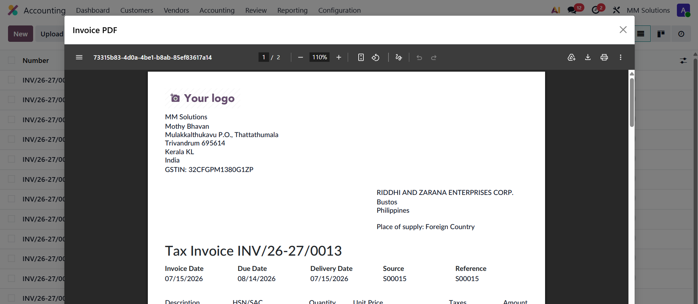
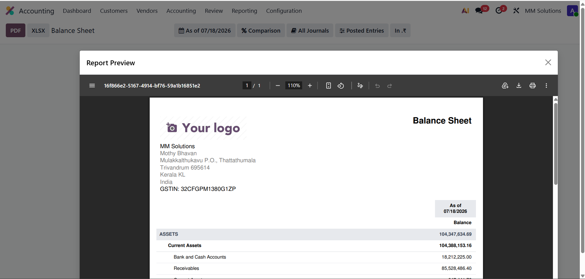
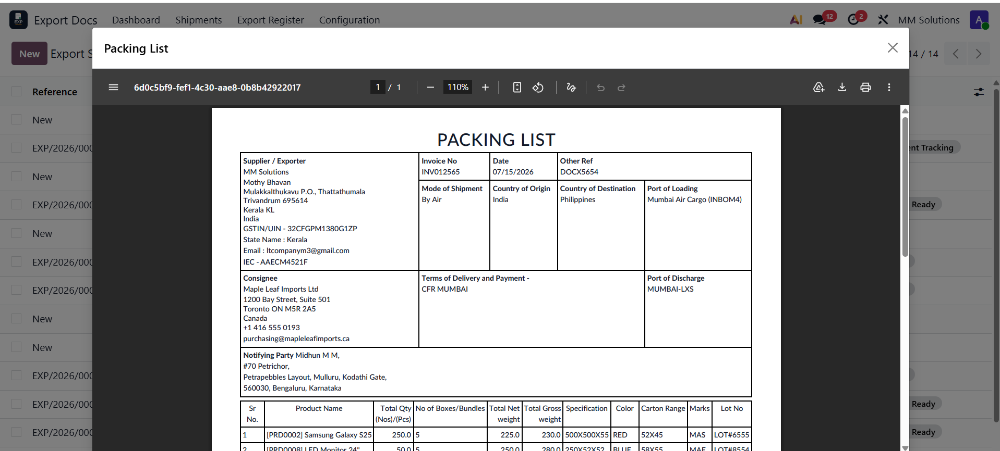

Stop downloading PDFs just to print them. Preview every Odoo report inside the backend and send it to your printer in one click.
Click Print → wait for the download → find the file → open it → press Ctrl+P → finally print. Six steps for every single invoice, delivery slip and label. Your Downloads folder fills up with files you never wanted.
Click Print → the report opens instantly in a preview dialog → hit the Print button. Done. The document goes straight to your system print dialog and nothing is saved to your disk unless you ask for it.
Every qweb-pdf report opens in a large preview dialog inside Odoo - invoices, sales orders, purchase orders, delivery slips, payslips and all your custom reports.
The Print button opens your system print dialog immediately - choose any printer connected to your machine and print. No files, no extra steps.
Need the file after all? A Download button sits right in the preview dialog with the correct report file name.
If a report can't be previewed for any reason, the module silently steps aside and Odoo's standard download behaviour takes over. Nothing ever breaks.
Form views, list views with multiple selected records, wizard-generated reports, and even Enterprise Accounting financial reports (Profit and Loss, Balance Sheet, Aged Reports) - all supported on Odoo Online / Odoo.sh and on-premise.
Pure frontend module. No external services, no third-party printing agents, no data ever leaves your Odoo server.

Customer invoices open instantly in a full preview - print or download straight from the toolbar.

Enterprise Accounting financial reports too - Balance Sheet, Profit and Loss, Aged Reports and more.

Works with every custom module report as well - no configuration needed.
Does it work on Odoo Online (SaaS) and Odoo.sh?
It is a standard installable module, so it works anywhere you can install apps: Odoo.sh, on-premise, and Odoo Online plans that allow custom modules.
Does it need any printer software or agents?
No. It uses your browser's native print flow, so any printer configured on your computer works out of the box.
Will it conflict with my custom reports?
No. It intercepts the generic report action, so every qweb-pdf report - standard or custom - is previewed the same way. Non-PDF reports (HTML, text) keep their normal behaviour.
What if the preview fails?
The module automatically falls back to Odoo's default download, so your users are never blocked.
Odoo technical-functional experts - localization, accounting and custom module development across Odoo 16 to 19.
Free support for installation and bug fixes. Reach us anytime through the Odoo Apps support channel or email.
Explore our other apps